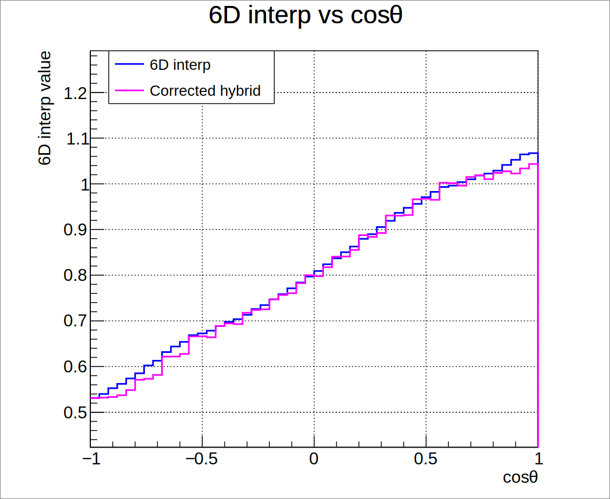
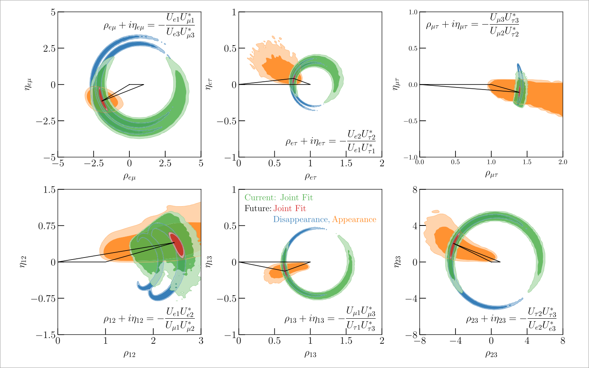

Event Reconstruction of the Hyper-Kamiokande Detector

Supervisors: Dr Vladimir Gligorov and Dr Mathieu Gigue
Hyper-Kamiokande

- Largest water Cherenkov detector
- 20,000 PMTs with charge and time data
- Will have leading sensitivity to lepton sector CPV
- Will also study astrophysical and atmospheric neutrinos, accelerator neutrinos and proton decay
Motivation
- Event reconstruction needs to be efficient and robust
- Unexpected deviations from simulated data and backgrounds
- Malfunctions and unpredictable detector behaviour
- Many potential benefits from machine learning incorporation
- Faster reconstruction means more accurate physics


Scattered Light Table
\[A(\textcolor{orange}{s}) = A(\textcolor{blue}{x_{\text{PMT}}, z_{{vtx}}, R_{{vtx}}, \varphi,
\theta, \phi}) =
\frac{\mathrm{d}\textcolor{green}{\mu}^{\text{sct}}}{\mathrm{d}\textcolor{green}{\mu}^{\text{iso,sct}}}\]
- Accounts for predicted charge from light scattered in water and reflected
- Table requires computationally taxing 6D interpolation at each point \(\textcolor{orange}{s}\) along the track - ~35% of total runtime
- Optimisable by studying the physics behind the table's structure

Approach 1: Gradient Threshold

Approach 1: Gradient Threshold


Approach 2: Parametrisation

- Regions of the scattering table can be well-fit by analytical functions
- Use physically-motivated relationships between dimensions to reduce interpolation complexity
Approach 2: Parametrisation

Approach 2: Parametrisation

Approach 2: Parametrisation
Phenomenology
Phenomenology
Summary
-
Honour's Thesis: Atomic Ionisation with Electron Interactions of Dark
Matter
- Computational improvements for atomic ionisation factor
- Postgraduate Research Assistant: The Neutrino Fog for Dark Matter Electron Scattering Experiments
- Calculation of neutrino fog for electron-interacting dark matter
- Master's Thesis: Optimising HyperK Event Reconstruction
- Parametrise the scattering light table to reduce interpolation cost
- Doctoral Thesis? Event Reconstruction and Phenomenological Analysis of NUCELUS
- Improve reconstruction efficiency, robustness, and CPV discovery potential